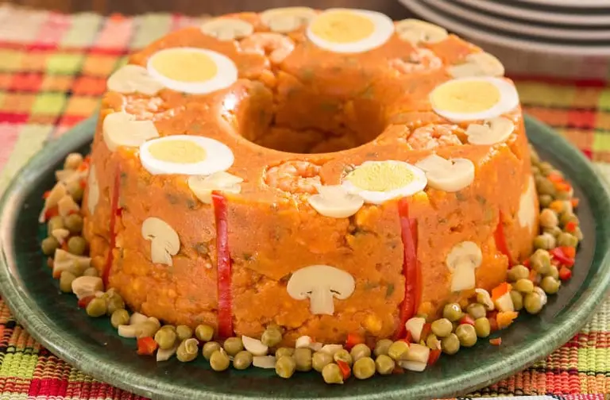

Cuscuz Paulista de Vó

🕒 Preparo: 45 Minutos
🍽️ Rende: 10 Porções
Lista de Ingredientes
- ½ xícara (chá) de óleo
- ½ xícara (chá) de azeite
- 1 colher (chá) de Alho Granulado, hidratado com 1 colher (sopa) de água
- 1 colher (sopa) de Cebola Granulada hidratada com 1 colher (sopa) de água
- 520 g de molho de tomate pronto
- 1 colher (café) Molho de Pimenta
- 2 ½ xícaras (chá) de água
- 1 colher (sopa) de sal
- 1 colher (sopa) de Cebolinha Verde
- 500 g de camarão pequeno limpo
- 1 pacote de Ervilha a Vapor (230 g)
- 3 xícaras (chá) de Farinha de Milho Amarela
- Alguns Cogumelos fatiados
- Um ou dois Ovos cozidos e fatiados
- Algumas Tiras de pimentão vermelho
Modo de Preparo
- Em uma panela, aqueça o óleo com o azeite e doure o alho com a cebola.
- Acrescente ao cuscuz à paulista o molho de tomate, o molho de pimenta, o louro, a água, o sal e a cebolinha. Abaixe o fogo e cozinhe por 15 minutos com a panela tampada.
- Junte os camarões e cozinhe mais 10 minutos. Se necessário, acrescente um pouco mais de água à receita de cuscuz paulista fácil!
- Acrescente as ervilhas e a farinha de milho e misture bem. Cozinhe por alguns minutos, até a massa começar a soltar do fundo da panela. Seu cuscuz à paulista está quase pronto!
- Unte uma assadeira com furo central com óleo.
- Decore o fundo da assadeira com os cogumelos, os ovos e as tiras de pimentão.
- Despeje a massa na assadeira e pressione levemente.
- Desenforme e sirva o cuscuz paulistano quente ou frio.
- Pronto, agora você já sabe como fazer cuscuz paulista!
← Voltar para a página "Sobre Mim"